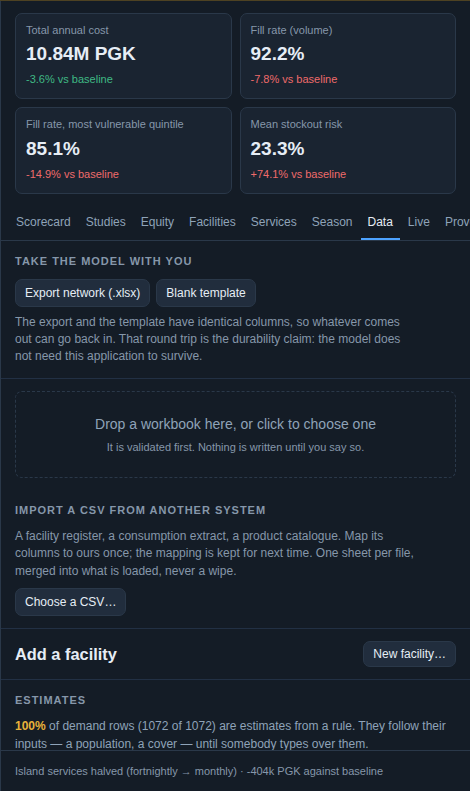
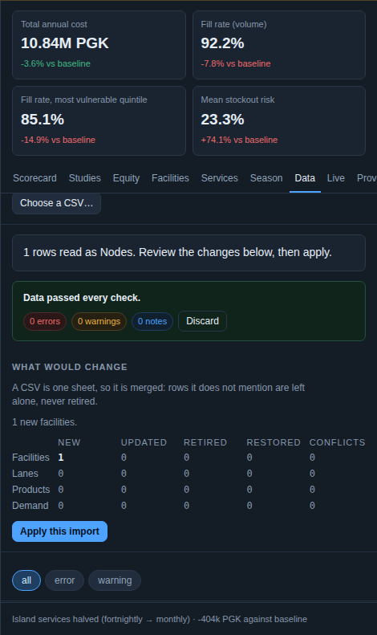
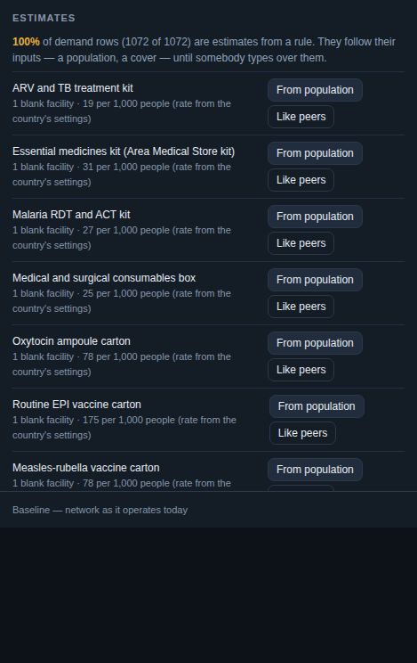
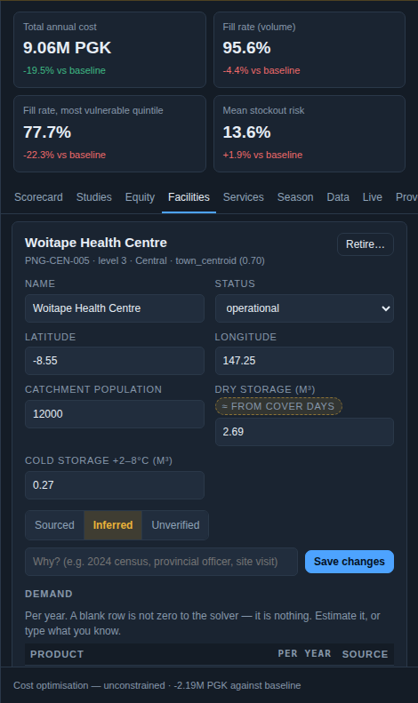
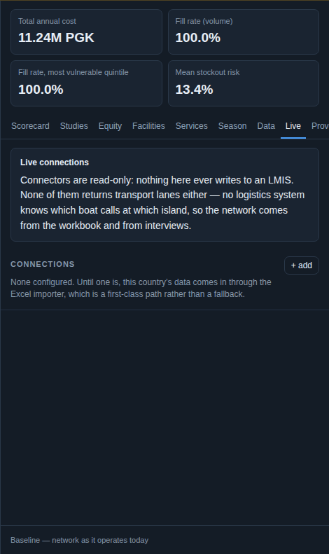

01 · Bring your data
Three doors in, one validated hallway
A workbook, a CSV from any system, or a live connection to DHIS2, OpenLMIS or Open mSupply. Whatever door the data comes through, it is validated against the same rules, diffed against what is already loaded, and every value arrives with where it came from and how sure someone was.
Try it now: your facility list, on a map, without uploading it
Drop a CSV of facilities. The headers are read and mapped in your browser, and the facilities are plotted. The file never leaves this page; there is no server behind it. Use your ministry's register, or the demo's own export.
In the tool this same mapper keeps the mapping under a name, validates the rows in partial mode, previews the changes, and merges them without ever retiring what the file does not mention.
The workbook round trip
The export and the blank template have identical columns, so whatever comes out can go back in. The model does not need this application to survive.


Estimates for the blanks
A blank the solver reads as zero and a typed guess that reads as a fact are the two ways demand data goes wrong. An estimate is the third way.


The overview says what share of the demand is estimated. In the illustrative workspace it is 100%, which is true and is the first entry of the confidence budget.
Live connections
DHIS2, OpenLMIS and Open mSupply, tested step by step, synced through the same validate, preview and apply pipeline as a workbook.
